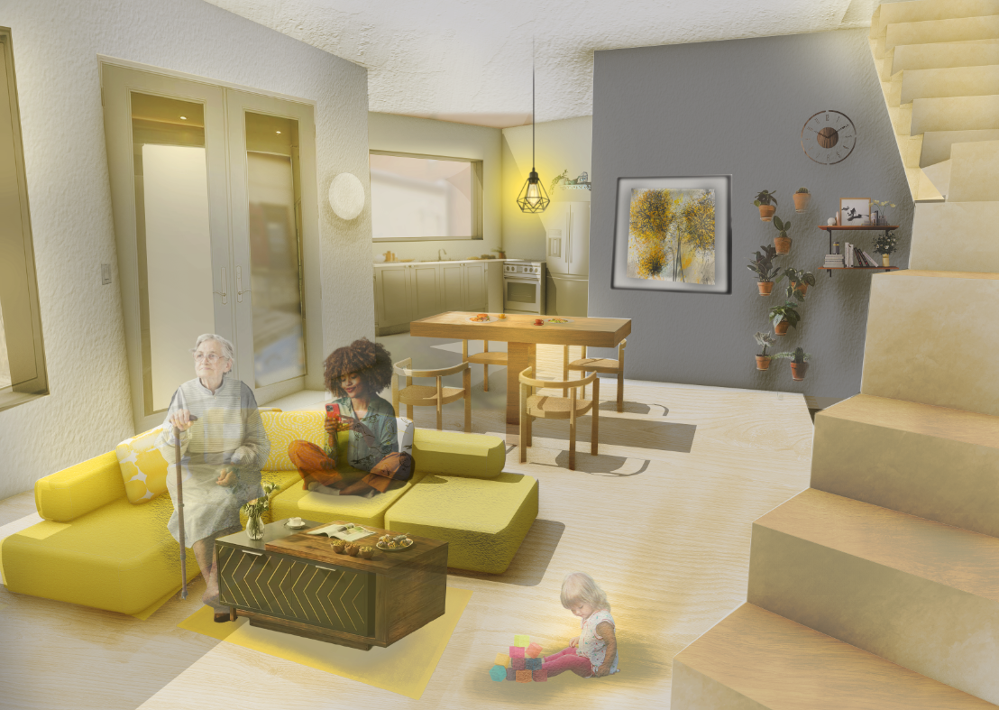
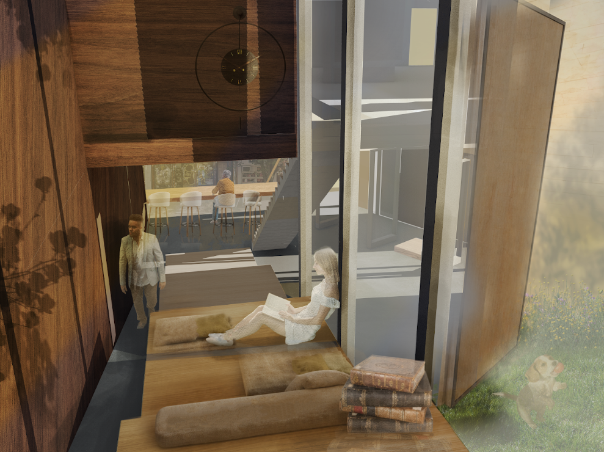
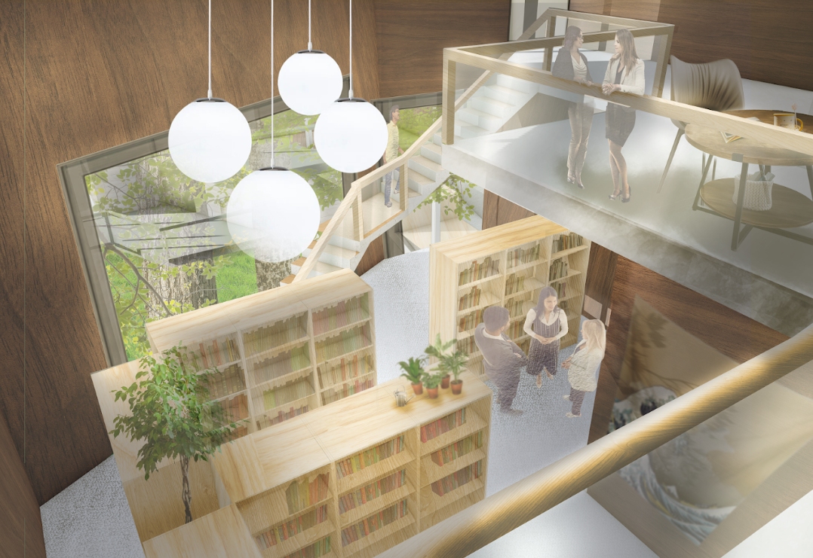
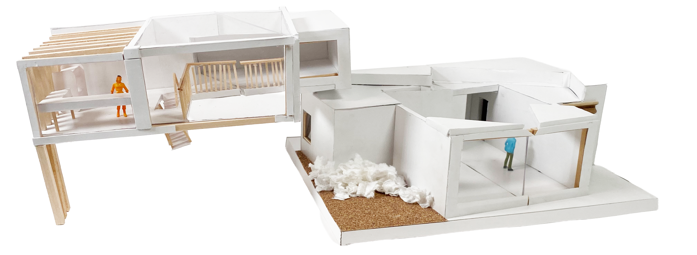
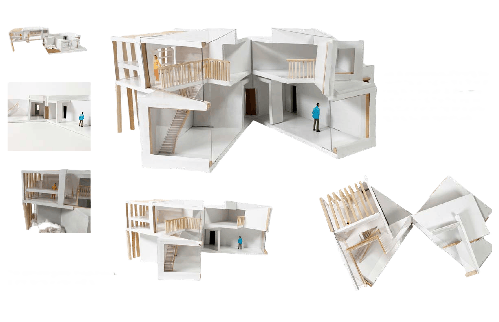

The Lingering Library
Located on Butler Street in Lawrenceville, Pittsburgh, this project sits in a neighborhood shaped by its industrial architecture of tightly packed brick buildings and repetitive gridded fenestration. While this historic fabric remains visually dominant, Lawrenceville has evolved into a vibrant arts district with a growing population of young professionals and families. This project responds to the disconnect between the area’s contemporary cultural identity and its static architectural expression by proposing a hybrid library and residence that reflects both past and present.
Academic Term: 2026 Spring
Instructors: Tommy CheeMou Yang & Tonya Markiewicz

Project Description
The front half of the building houses a modern library designed to support collaboration, technology, and varied modes of study. A central courtyard organizes circulation and serves as a shared public space, addressing the neighborhood’s lack of accessible green areas.
The rear portion of the building accommodates a multigenerational family, reflecting common household structures in Lawrenceville. This family includes a mother who works at the UPMC, a father who works at the library, a grandparent, and their 4-year-old daughter. The home is organized to balance privacy and connection, with living spaces oriented toward the courtyard and a controlled-access elevated tunnel linking the residence to the library.



This interactive and handmade model reflects the differenciation between the building's domestic and community functions, as the two areas are both separatable and openable.


Just as users interact differently with the first and second floor of the gallery, one can do the same with this handmade model. The first and second floor open on the same unifying axis, but are separateable.